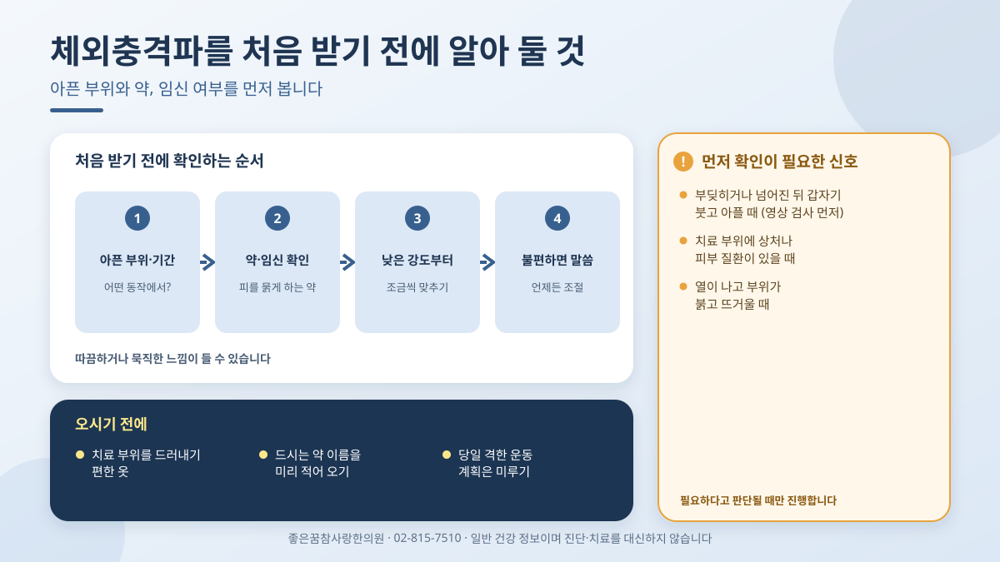

이종호 한의사 감수좋은꿈참사랑한의원 대표원장 (한의사 면허번호 19769)발행 2026-11-23 · 수정 2026-11-26
이 글의 차례
- 왜 미리 확인하나요
- 먼저 이렇게 여쭙니다
- 스스로 점검해 보세요
- 일상에서 먼저 해 볼 수 있는 것
- 체외충격파를 바로 쓰지 않는 통증도 있나요?
- 왜 첫날은 낮은 강도로 시작할까요?
- 받는 동안에는 이렇게 진행합니다
- 예를 들면 이런 경우입니다
- 받는 날 아침에는 무엇을 챙기면 좋을까요?
- 처음이라 걱정되는 마음도 함께 말씀해 주세요
- 얼마나 지켜보고 언제 상담할까요
- 몇 번 받으면서 무엇을 비교하나요?
- 한의원에서 함께 살필 수 있는 경우
- 다른 치료와는 어떻게 이어서 쓰나요?
- 집에서 미리 해 두면 좋은 통증 관찰
- 받은 뒤 집에 가실 때 알려 드리는 것
- 이렇게 기록해 오시면 상담이 쉬워집니다
- 이런 증상은 먼저 확인이 필요합니다
- 관련 글
체외충격파는 몸 밖에서 아픈 부위에 충격파 에너지를 전달하는 방법으로, 처음 받기 전에 아픈 부위와 기간, 드시는 약, 임신 여부를 먼저 확인합니다. 진행하는 동안 따끔하거나 묵직한 느낌이 들 수 있어 강도를 낮게 시작해 조금씩 맞추며, 불편하면 언제든 말씀하시면 됩니다.
처음이라 긴장되는 것은 자연스러운 일입니다. 기계에서 어떤 소리가 나는지, 시간이 얼마나 걸리는지, 받고 나서 바로 일하러 가도 되는지처럼 사소해 보이는 궁금증도 진료실에서 편하게 물어 주세요. 미리 알고 받으면 몸에 힘이 덜 들어가 강도를 맞추기도 쉬워집니다.
왜 미리 확인하나요
- 같은 부위라도 통증이 생긴 지 얼마나 되었는지, 어떤 동작에서 아픈지에 따라 적용 여부와 방법이 달라집니다.
- 혈액을 묽게 하는 약을 드시면 치료 부위에 멍이 들기 쉬워 먼저 알아야 합니다.
- 임신 중이거나 치료 부위에 감염·상처가 있으면 피해야 하는 경우가 있습니다.
먼저 이렇게 여쭙니다
- 아픈 부위가 어디이고 언제부터 아팠나요?
- 어떤 동작에서 가장 불편한가요?
- 혈액을 묽게 하는 약을 드시나요?
- 임신 중이거나 가능성이 있나요?
- 최근 그 부위에 주사 치료를 받은 적이 있나요?
스스로 점검해 보세요
- 가장 아픈 동작 한두 가지를 바로 말할 수 있다
- 통증이 시작된 시기와 계기를 기억한다
- 매일 드시는 약, 특히 혈액을 묽게 하는 약의 이름을 알고 있다
- 임신 중이거나 그 가능성이 있는지 확인했다
- 최근 몇 주 사이 그 부위에 주사나 시술을 받았는지 기억한다
- 치료 부위에 상처나 피부 질환, 열감이 없다
- 치료 당일 격한 운동이나 오래 걷는 일정을 잡아 두지 않았다
잘 모르겠는 항목이 있다면 접수할 때 그대로 말씀해 주세요. 확인이 끝날 때까지는 체외충격파를 미루고 다른 방법을 먼저 살필 수 있습니다.
일상에서 먼저 해 볼 수 있는 것
- 치료 부위를 드러내기 편한 옷 입고 오기
- 드시는 약 이름을 미리 적어 오기
- 치료 당일 격한 운동 계획은 미루기
- 궁금한 점을 메모해 오기
- 치료 전에 진통제를 먹었다면 접수 때 알려 주기
체외충격파를 바로 쓰지 않는 통증도 있나요?
있습니다. 같은 부위가 아파도 원인이 다르면 방법이 달라집니다. 저는 처음 오신 분의 통증이 힘줄이나 근막 쪽 문제인지, 신경이나 관절 안쪽 문제인지를 먼저 나누어 보려고 합니다.
- 팔다리로 저린 느낌이 뻗어 내려가는 경우: 목이나 허리에서 신경이 눌린 것일 수 있어 그 원인부터 살핍니다.
- 넘어지거나 부딪힌 직후 갑자기 붓고 아픈 경우: 뼈나 인대 손상을 먼저 확인해야 합니다.
- 관절이 붉고 뜨겁게 붓는 경우: 염증이나 감염 여부를 먼저 살핍니다.
- 아픈 지 며칠 되지 않았고 쉬면 가라앉는 경우: 사용량 조절과 지켜보기가 먼저일 수 있습니다.
예를 들어 발뒤꿈치가 아프다고 오셨는데 허리부터 다리 뒤쪽으로 저림이 함께 있다면, 발바닥만 보지 않고 허리와 다리의 신경 쪽을 함께 살핍니다. 이렇게 확인한 뒤에 체외충격파를 쓸지, 침·약침·추나를 먼저 할지를 정합니다.
왜 첫날은 낮은 강도로 시작할까요?
같은 강도라도 느끼는 정도는 사람마다, 부위마다 다릅니다. 처음부터 세게 시작하면 몸이 긴장해 힘이 들어가고, 그러면 아픈 지점을 정확히 찾기 어려워집니다. 그래서 첫날은 몸이 충격파의 느낌에 익숙해지는 시간으로 봅니다.
받는 동안 '찌릿하다', '묵직하다', '울린다'처럼 느낌을 말로 표현해 주시면 위치와 세기를 맞추는 데 큰 도움이 됩니다. 저는 이 대답을 듣고 아픈 자리에서 조금씩 위치를 옮겨 가며 가장 예민한 곳을 찾습니다.
받는 동안에는 이렇게 진행합니다
- 누르면 가장 예민한 지점을 먼저 찾고, 그 주변을 넓게 살핍니다.
- 처음에는 낮은 강도로 시작해 느낌을 여쭙고, 견딜 수 있는 범위 안에서 조금씩 맞춥니다.
- 기계에서 일정한 소리가 나고 부위가 울리는 느낌이 들 수 있으며, 참기 어려우면 바로 말씀해 주시면 멈추거나 낮춥니다.
- 끝나면 그 자리에서 불편했던 동작을 한 번 더 해 보시게 하고, 당일 주의할 점을 알려 드립니다.
예를 들면 이런 경우입니다
- 예를 들어 하루 종일 마우스를 쓰는 직장인이 팔꿈치 바깥쪽 통증으로 처음 오신 경우라면, 컵을 들 때나 문고리를 돌릴 때처럼 아픈 동작을 먼저 확인하고 낮은 강도로 시작해 반응을 봅니다. 다음 날 업무에서 팔을 얼마나 써야 하는지도 함께 여쭙습니다.
- 예를 들어 아침 첫걸음에 발바닥이 아픈 어르신이 혈압약과 혈액을 묽게 하는 약을 함께 드신다면, 약 봉투를 가져오시면 멍이 들 가능성을 따져 보고 적용 여부와 강도를 정하는 데 도움이 됩니다.
- 예를 들어 아이를 자주 안아 손목과 엄지 쪽이 아픈 육아 중인 분이라면, 임신 가능성이 있는지 먼저 여쭙고, 가능성이 있다면 확인될 때까지 다른 방법을 함께 찾습니다.
받는 날 아침에는 무엇을 챙기면 좋을까요?
치료받을 부위를 쉽게 드러낼 수 있는 옷이 가장 편합니다. 어깨라면 단추가 있거나 목이 넓은 윗옷, 무릎이나 발이라면 걷어 올리기 쉬운 바지와 벗기 쉬운 양말이 좋습니다. 몸에 꼭 맞는 옷은 갈아입으셔야 할 수 있습니다.
드시는 약은 평소처럼 드시고, 약 이름을 모르시면 약 봉투나 처방전을 사진으로 찍어 오세요. 끼니는 거르지 않는 편이 좋습니다. 배가 많이 고프거나 피곤한 날에는 같은 강도라도 더 예민하게 느껴질 수 있기 때문입니다.
받은 뒤 바로 무거운 짐을 들거나 오래 걸어야 하는 일정이 있다면 미리 알려 주세요. 그날 일정에 맞춰 강도와 부위를 조절하고, 필요하면 날짜를 다시 정하는 것도 함께 상의합니다.
처음이라 걱정되는 마음도 함께 말씀해 주세요
충격파라는 말 때문에 겁이 나는 분이 많습니다. 기계 소리에 놀라거나 예전에 받은 치료가 아팠던 기억이 있다면 시작 전에 말씀해 주세요. 소리와 느낌을 미리 설명드리고, 짧게 한 번 느껴 보신 뒤 이어 갈지 정할 수 있습니다.
얼마나 지켜보고 언제 상담할까요
- 받은 날과 다음 날 치료 부위가 뻐근하거나 살짝 붉어지는 정도라면, 하루 이틀 무리하지 않고 지내며 변화를 메모해 다음 진료 때 알려 주세요.
- 통증이 생긴 지 얼마 되지 않았고 그 부위를 덜 쓰자 며칠 사이 가라앉는다면, 체외충격파보다 사용량 조절과 지켜보기가 먼저일 수 있습니다.
- 쉬고 사용량을 줄여도 2~3주 넘게 같은 동작에서 아프거나 아침 첫 동작이 계속 불편하다면 진찰을 받아 보시길 권합니다.
몇 번 받으면서 무엇을 비교하나요?
저는 처음 오신 날, 가장 불편한 동작 한두 가지를 정해 0에서 10까지 점수를 여쭙고 기록해 둡니다. 예를 들어 아침 첫걸음, 컵 들기, 팔을 머리 위로 올리기처럼 생활에서 자주 하는 동작입니다.
다음에 오시면 같은 동작을 같은 방식으로 다시 해 보시고 점수를 비교합니다. 통증 점수와 함께 그 동작을 하루에 몇 번이나 하셨는지, 잠을 설친 날이 있었는지도 여쭙습니다.
몇 번 받았는데도 점수에 변화가 없다면 방법을 그대로 이어 가지 않고, 진찰을 다시 하거나 다른 방법을 함께 검토합니다. 필요하면 영상 검사가 가능한 의료기관을 안내해 드립니다.
한의원에서 함께 살필 수 있는 경우
- 발뒤꿈치, 어깨, 팔꿈치처럼 오래된 통증이 있는 경우 통증 부위와 동작을 함께 살핍니다.
- 통증이 있는 지점을 넓게 눌러 보고 예민한 부위를 찾은 뒤 강도를 조절합니다.
- 필요하다고 판단될 때 침, 약침, 추나와 이어서 씁니다.
좋은꿈참사랑한의원에서는 진찰한 뒤 체외충격파(제우스·한일티엠)를 쓸지, 침·약침·추나를 함께 쓸지 정합니다. 귀가 전에는 당일 주의할 점과 다음 진료에서 같은 동작으로 확인할 일을 알려 드립니다.
처음 오시면 접수 때 드시는 약과 임신 가능성, 최근 받은 주사나 시술을 함께 알려 주세요. 진료실에서는 맥부터 짚으면서 이야기를 듣고, 필요하면 혀와 배를 살핀 뒤 아픈 지점을 눌러 보고 움직여 봅니다.
필요하다고 판단될 때 초음파로 힘줄과 주변 조직을 확인한 다음, 어느 부위에 어떤 강도로 시작할지 먼저 설명해 드립니다. 다음에 오시면 지난번 치료 뒤 반응과 같은 동작의 통증 점수를 이어서 확인하고 방법을 다시 맞춥니다.
체외충격파는 진찰 후 필요하다고 판단될 때만 하며, 횟수는 반응을 보며 정합니다. 건강보험 적용 여부나 비용이 궁금하다면 방문 전 전화로 확인해 주세요. 드시는 약은 처방한 의사와 상의 없이 끊지 않습니다.
다른 치료와는 어떻게 이어서 쓰나요?
체외충격파 하나만으로 모든 통증을 살피기는 어렵습니다. 아픈 지점 주변의 근육이 함께 굳어 있다면 침으로 긴장을 풀고, 관절이나 척추의 움직임이 함께 불편하다면 추나를 이어서 쓰기도 합니다.
필요하다고 판단될 때는 초음파로 위치를 확인하며 약침을 놓는 경우도 있습니다. 몸이 차고 뻣뻣하게 굳어 있는 날에는 온열 물리치료로 먼저 몸을 데운 뒤 진행하기도 합니다. 어떤 방법을 함께 쓸지는 그날 진찰과 지난 반응을 보고 정합니다.
예를 들어 팔꿈치 바깥쪽 통증과 함께 목과 어깨가 늘 뻐근한 분이라면, 팔꿈치에만 집중하기보다 목과 어깨의 긴장도 함께 살핍니다. 아픈 자리와 이어진 곳을 함께 보아야 같은 통증이 되풀이되는 이유를 찾기 쉽기 때문입니다.
집에서 미리 해 두면 좋은 통증 관찰
진료 전 며칠 동안 아픈 부위를 조금만 관찰해 오시면 첫날 진찰이 훨씬 수월합니다. 하루 중 언제 가장 아픈지, 아침 첫 동작과 저녁 중 어느 쪽이 더 불편한지, 쉬면 덜해지는지 오히려 굳는지를 떠올려 보세요.
아픈 자리를 손가락 하나로 짚을 수 있는지, 넓게 퍼져서 어디라고 말하기 어려운지도 중요한 단서입니다. 손가락으로 짚을 수 있을 만큼 좁은 자리라면 힘줄이 붙는 곳의 문제일 가능성을 생각하고, 넓게 퍼지거나 저리다면 다른 원인도 함께 살핍니다.
이런 관찰을 휴대전화에 두세 줄 적어 오시면, 저는 그 메모를 보며 어디부터 눌러 볼지 정합니다.
받은 뒤 집에 가실 때 알려 드리는 것
치료가 끝나면 그날 피하면 좋은 동작과 다음 진료에서 다시 해 볼 동작을 알려 드립니다. 처음에는 뻐근함이 하루 이틀 이어질 수 있다는 점과, 어떤 반응이 생기면 먼저 연락하시면 좋을지도 함께 말씀드립니다.
집에 가셔서는 그날 저녁과 다음 날 아침의 통증을 0에서 10까지 짧게 적어 두세요. 이 숫자가 다음 진료에서 강도와 간격을 다시 맞추는 기준이 됩니다.
멍이나 붉은 기가 생겼다면 사진을 찍어 두시고, 하루 사이에 눈에 띄게 번지거나 붓기와 열감이 함께 커진다면 다음 예약을 기다리지 말고 전화로 먼저 알려 주세요. 처음 받은 뒤의 반응은 다음 강도를 정하는 데 가장 중요한 정보가 되므로, 좋았던 점과 불편했던 점을 모두 있는 그대로 말씀해 주시면 됩니다.
이렇게 기록해 오시면 상담이 쉬워집니다
- 아픈 동작 한두 가지와 통증 정도(0~10)
- 통증이 시작된 시기와 계기
- 드시는 약(혈액을 묽게 하는 약 포함)
- 예전에 받은 치료와 그때의 느낌
이런 증상은 먼저 확인이 필요합니다
- 부딪히거나 넘어진 뒤 갑자기 붓고 아픈 경우, 팔다리에 저림이나 힘 빠짐이 생긴 경우
- 부위가 붉고 뜨겁게 붓거나 열이 나는 경우
이런 신호가 있으면 한의원보다 가까운 병원이나 응급실을 먼저 찾으세요.
관련 글

여쭙는 것
- 아픈 부위가 어디이고 언제부터 아팠나요?
- 어떤 동작에서 가장 불편한가요?
- 혈액을 묽게 하는 약을 드시나요?
생활에서 해 볼 것
- 치료 부위를 드러내기 편한 옷 입고 오기
- 드시는 약 이름을 미리 적어 오기
- 치료 당일 격한 운동 계획은 미루기
한의원에서 함께 살필 것
- 발뒤꿈치, 어깨, 팔꿈치처럼 오래된 통증이 있는 경우 통증 부위와 동작을 함께 살핍…
- 통증이 있는 지점을 넓게 눌러 보고 예민한 부위를 찾은 뒤 강도를 조절합니다.
- 필요하다고 판단될 때 침, 약침, 추나와 이어서 씁니다.
먼저 확인이 필요한 신호
- 부딪히거나 넘어진 뒤 갑자기 붓고 아픈 경우, 팔다리에 저림이나 힘 빠짐이 생긴 경우
- 부위가 붉고 뜨겁게 붓거나 열이 나는 경우
한눈에 보는 표
| 구분 | 핵심 |
|---|---|
| 여쭙는 것 | 아픈 부위가 어디이고 언제부터 아팠나요? 어떤 동작에서 가장 불편한가요? |
| 생활에서 해 볼 것 | 치료 부위를 드러내기 편한 옷 입고 오기 드시는 약 이름을 미리 적어 오기 |
| 한의원에서 함께 살필 것 | 발뒤꿈치, 어깨, 팔꿈치처럼 오래된 통증이 있는 경우 통증 부위와 동작을 함께 살핍니다. 통증이 있는 지점을 넓게 눌러 보고 예민한 부위를 찾은 뒤 강도를 조절합니다. |
| 먼저 확인이 필요한 신호 | 부딪히거나 넘어진 뒤 갑자기 붓고 아픈 경우, 팔다리에 저림이나 힘 빠짐이 생긴 경우 부위가 붉고 뜨겁게 붓거나 열이 나는 경우 |
자주 묻는 질문
체외충격파는 아픈가요?
부위와 상태에 따라 느낌이 다르며, 불편하면 바로 말씀해 주시면 강도를 조절합니다.
받고 나서 바로 일상생활을 해도 되나요?
대부분 일상생활은 가능하지만, 당일 격한 운동은 피하는 것을 권합니다.
어떤 부위에 주로 쓰나요?
발뒤꿈치, 어깨, 팔꿈치처럼 힘줄이 붙는 자리의 오래된 통증에 쓰는 경우가 많지만, 적용 여부는 진찰 후 정합니다.
한 번 받는 데 시간은 얼마나 걸리나요?
부위와 상태에 따라 다르며, 진찰 후 진행 시간과 순서를 미리 안내해 드립니다.
세게 받을수록 좋은가요?
그렇지 않습니다. 강도가 높다고 좋은 것은 아니며, 견딜 수 있는 범위 안에서 상태에 맞게 조절합니다.
좋은꿈참사랑한의원은 재진 때 지난번 이야기부터 이어서 여쭙니다. 진료시간과 예약은 오시는 길에서 확인하세요.
어디서 상담받을 수 있나요?
좋은꿈참사랑한의원은 서울 동작구 만양로2길 2 신성빌딩 3층·5층(서울 동작구 상도동, 7호선 상도역 3번 출구 근처)에 있습니다. 한의사 3명(이종호 대표원장, 조영기 수석진료원장, 정원영 진료원장)이 진료합니다. 진료시간은 평일 09:30~20:00(점심 13:00~14:00), 토·일·공휴일 09:30~15:00이며, 방문 전 전화로 확인을 권합니다. 예약은 네이버 예약, 카카오톡 상담, 전화 02-815-7510로 받습니다.
이 글은 일반적인 건강 정보이며 개인의 진단이나 치료를 대신하지 않습니다. 증상이 있거나 복용 중인 약이 있다면 진료를 통해 확인하세요. 치료 효과는 개인마다 다를 수 있습니다.
작성 기준: 일반적으로 알려져 있는 건강 정보를 참고해 정리했습니다(대표원장 감수). 증상 기록은 1~2주 동안 하루 1회, 비슷한 시간에 적어 오시면 지난 상태와 비교하기 쉽습니다.